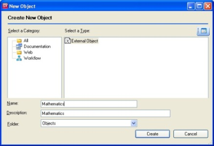

This sample shows how to include an external .Net Assembly in GeneXus. The assembly returns the result of multiplying two numeric parameters. To include an external .Net Assembly, follow the steps below:  2. Choose the “.net Native” option and select the path to the assembly.
3. Check the Multiply method and Press "Import".
4. To interact with this “external object”, define a variable based on the associated object and use the available Methods.
5. Execute (press F5).
Note: the Native code of this assembly (ClassLibrary1.dll) was created using the following code: To see the Video press here (swf file) or here (wmv file).
|
| Backlinks |
| AssemblyImport MSBuild Task |